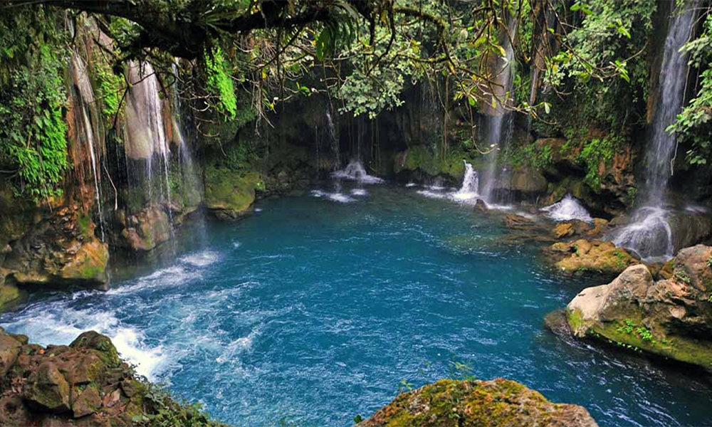

Sus bellezas naturales
-
Sótano de las Golondrinas
El Sótano de las Golondrinas es una de las maravillas naturales más impresionantes de la Huasteca Potosina, situado en el estado de San Luis Potosí, México. Es una enorme cueva vertical en forma de cono que se abre en el suelo, y se cree que es la cueva de aves más profunda del mundo. El Sótano de las Golondrinas tiene una profundidad de 372 metros y un diámetro en la boca de la cueva de alrededor de 50 metros. Al interior de la cueva hay un gran espacio vacío que se extiende hacia abajo, y es el hogar de una gran cantidad de aves, principalmente golondrinas blancas que anidan en la cueva durante ciertas épocas del año.
-
Río Micos
El Río Micos es uno de los principales ríos de la Huasteca Potosina, situado en el estado de San Luis Potosí, México. Es famoso por sus hermosas cascadas, pozas de agua cristalina y cañones escarpados, lo que lo convierte en un destino popular para los amantes de la naturaleza y la aventura. El Río Micos cuenta con una gran cantidad de pozas de agua cristalina y cascadas, cada una con su propia belleza y atractivo. Entre las más populares se encuentran las cascadas de El Meco y las cascadas de Minas Viejas. También hay secciones del río que son perfectas para nadar, hacer esnórquel y rafting, y hay empresas locales que ofrecen tours y actividades para explorar el río.
-

Puente de Dios
El Puente de Dios es uno de los lugares más impresionantes y populares de la Huasteca Potosina, situado en el estado de San Luis Potosí, México.
Es una formación rocosa natural que se asemeja a un puente y está ubicada sobre el río Santa María, formando una poza de agua cristalina de color turquesa en su interior. El agua que fluye por debajo del puente proviene de las cuevas cercanas y es muy clara y fría, lo que hace que el lugar sea ideal para nadar, bucear y hacer esnórquel. Hay escalones y plataformas naturales que facilitan el acceso a la poza, y también hay un puente colgante que cruza el río y ofrece vistas panorámicas del lugar.